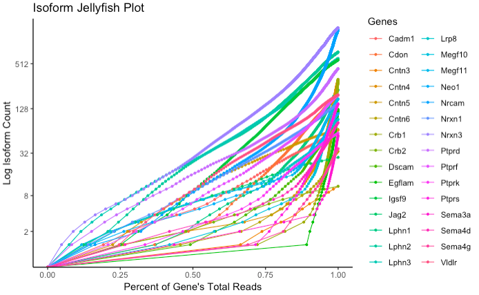

Jellyfish Plots

jellyfish_plot(database, genes_to_include = unique(database$GeneDB$Name), stabilize_colors = F, use_ORFs = F, ...)
Generates a plot showing the log cumulative isoform abundance distribution for one or more genes. Normalized read count is along the x-axis, and log cumulative isoform count is along the y-axis. Each gene is represented by one line, allowing for comparison between the skewness of relative abundance of isoforms between multiple genes.
Arguments
database |
A compiled Database object. |
|---|---|
genes_to_include |
Vector of gene names to subset from the database. Default is to plot all genes in the database. |
dot_size |
Size of points to plot. Default is to scale this value by the number of genes being plotted, but can be manually set for appearance. |
stabilize_colors |
Logical. Set to TRUE if you would like to plot a subset of genes, and have the colors match the colors used when all genes are plotted. Default is FALSE, and colors are generated according to the number of genes currently being plotted. |
use_ORFs |
Logical. Set to TRUE to use abundances from OrfDB instead of abundances from TranscriptDB. Note that OrfDB collapses isoforms with non-unique transcripts, so abundances may differ significantly. |
insert_title |
String to customize the title of the plot. |
Returns
A jellyfish plot constructed as a ggplot object.Example Usage
# database setup
gene_ID_table <- data.frame(ID = c("PB.1"), Name = c("Gene1"))
rawDB <- compile_raw_db(transcript_file, abundance_file, gff_file, ORF_file)
DB <- process_db(rawDB, gene_ID_table)
jellyfish_plot(DB)
Notes
Requires theggplot2 package.